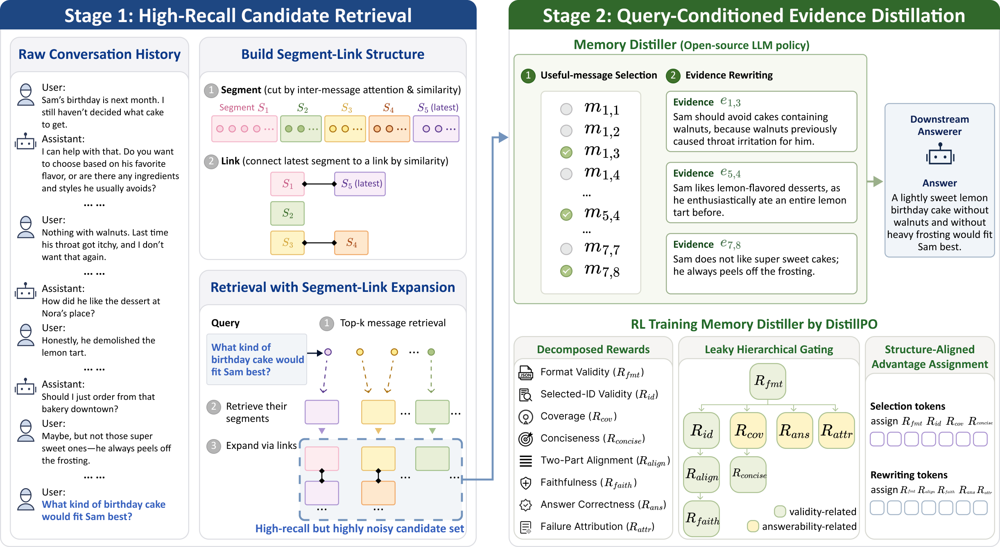
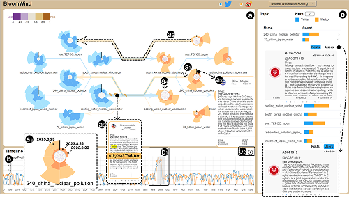

Hi! I am Jianing Yin (殷佳宁 in Chinese), a third-year Ph.D. candidate at the State Key Lab of CAD&CG, Zhejiang University. As a member of ZJUIDG, I am fortunate to be supervised by Prof. Yingcai Wu and Dr. Tan Tang.
My research interests span social media analysis, human–LLM collaboration, and agent memory. Broadly, I aim to develop interpretable and collaborative AI systems that help people organize, retrieve, and reason over complex information. My previous work investigates how visual metaphors and interactive systems can support the analysis of cross-platform social media phenomena. More recently, I have been studying memory systems for LLM agents, and I am interested in further exploring how agent memory can support deeper forms of human–agent collaboration, from shared context understanding to better alignment with human intent.
🔥 News
- 2024.07: 🎉🎉 Our paper “Blowing Seeds across Gardens: Visualizing Implicit Propagation of Cross-Platform Social Media Posts” is accepted to IEEE VIS 2024.
📝 Publications

DeferMem: Query-Time Evidence Distillation via Reinforcement Learning for Long-Term Memory QA
Jianing Yin, Tan Tang
Under Review

Blowing Seeds across Gardens: Visualizing Implicit Propagation of Cross-Platform Social Media Posts
Jianing Yin, Hanze Jia, Buwei Zhou, Tan Tang, Lu Ying, Shuainan Ye, Tai-Quan Peng, and Yingcai Wu
IEEE Transactions on Visualization and Computer Graphics (VIS’24)
📖 Educations
- 2023.09 - now, PhD, College of Computer Science and Technology, Zhejiang University, Hangzhou, China.
- 2019.09 - 2023.06, Undergraduate, Turing Class, College of Computer Science and Technology, Zhejiang University, Hangzhou, China.
🧑🏫 Experience
- 2025.04 - 2025.06, Teaching Assistant, Undergraduate Course at Zhejiang University: Introduction to Data Visualization.
- 2024.11 - 2025.01, Teaching Assistant, Undergraduate Course at Zhejiang University: Introduction to Data Visualization.
- 2024.07 - 2024.07, Teaching Assistant, Undergraduate Course at Zhejiang University: International Summer School on Visual Analytics.
- 2024.02 - 2024.06, Teaching Assistant, Undergraduate Course at Zhejiang University: The Intellectual History of Computer Science.
- 2022.07 - 2022.09, Summer Intern, Technology Department of Morgan Stanley.